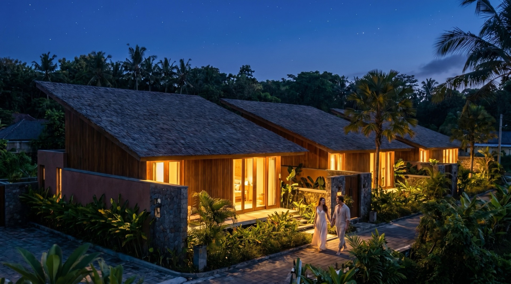
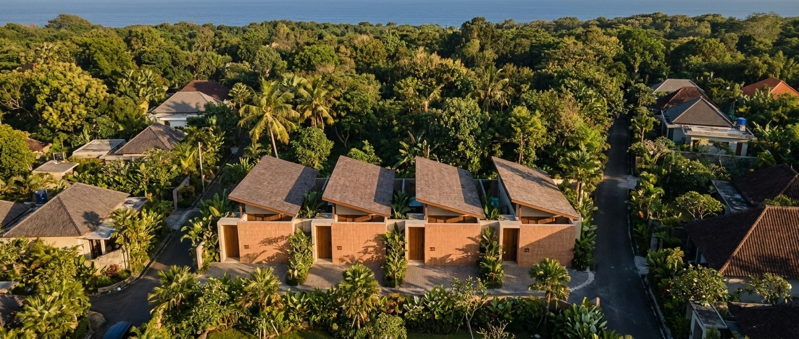
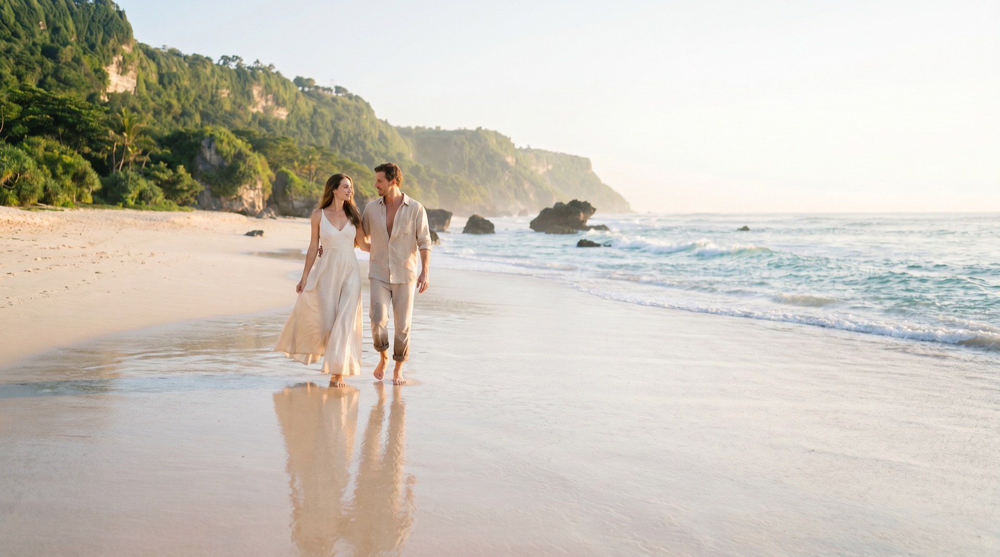
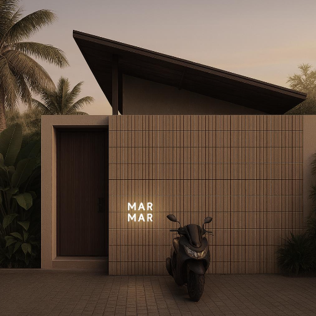
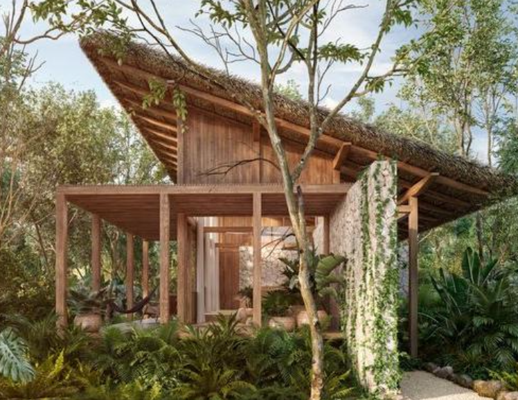

One scroll,
from sunrise to stay.
A single-page, scroll-driven site. It opens on a cinematic day-arc — sunrise to starlight — then unfolds: the place, a 3D build of the villas, the interiors, the four headboards, the grounds, and the project film. One continuous scroll, from first light to “stay.”



Four villas, four headboards.
A teak-lattice corridor links the four. Each carries its own custom headboard, designed by MarMar Studio.


A teak lattice, and stone underfoot.
Single-slope ceilings of exposed beams, wicker-bladed fans and linen curtains. Bathrooms in green glass mosaic with matte-black fittings; doors in teak and ulin.


Through the gate, into the trees.
Arrival is through a teak door in a slatted timber wall, the name in lit signage. Inside, each villa keeps a built-in oak coffee & mini-bar nook. The villas stand among the trees, under broad single-slope roofs.
